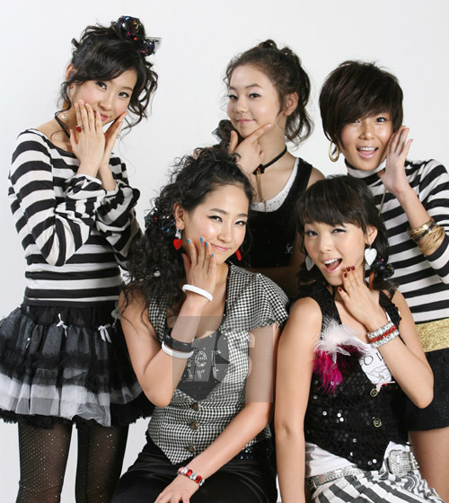

Doony Graff y Wonder Girls vienen de mundos muy distintos uno del under del reggaetón mexicano y las otras del K-pop clásico, pero si los comparas desde el punto de vista musical y estético, sí hay puntos en común interesantes

Uso de sonidos retro y base rítmica bailable
Wonder Girls, sobre todo en “Nobody” o “Tell Me”, se caracterizaban por rescatar sonidos retro de los 80s, sintetizadores y beats simples pero pegajosos.
Doony Graff usa algo parecido: beats old school del reggaetón, inspirados en el reggaetón de los 2000 (Daddy Yankee, Tego Calderón, Zion & Lennox), con loops melódicos suaves y percusión repetitiva que genera ese efecto “bailable clásico”.
Ambos artistas mezclan nostalgia + ritmo, algo que conecta con públicos que aman los sonidos “de antes”.
Temática romántica cotidiana
En Wonder Girls, las letras suelen hablar de amor adolescente, deseo, nostalgia o timidez amorosa.
En Doony Graff, aunque el tono es más urbano y callejero, también hay una fuerte carga de romance cotidiano: hablarle a una “mami”, a la vecina, a alguien del barrio, con un toque de picardía pero sin perder el tono suave.
Ambos tocan el amor desde lo cotidiano, aunque en contextos culturales distintos.